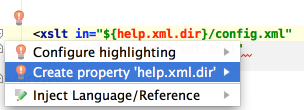

You can start referring to an Ant property or target even if it is not defined yet. An intention action feature will suggest you to automatically create the necessary tag, without the need for you to leave your current editing location.
